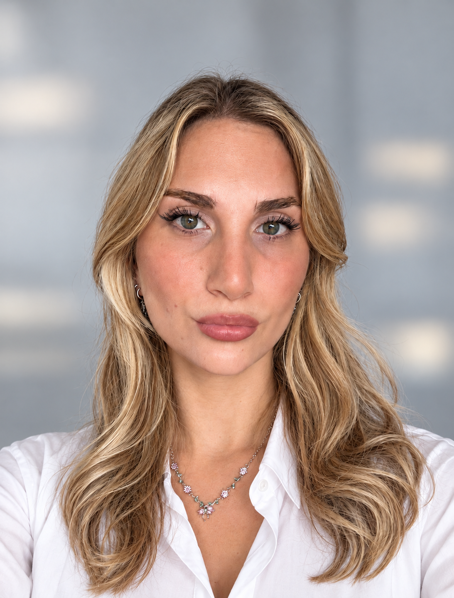
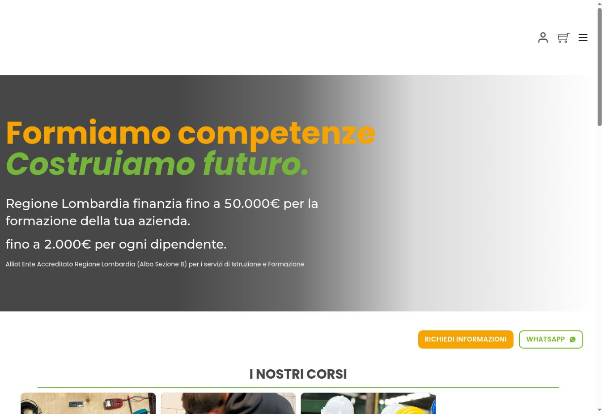
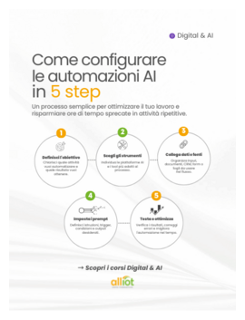
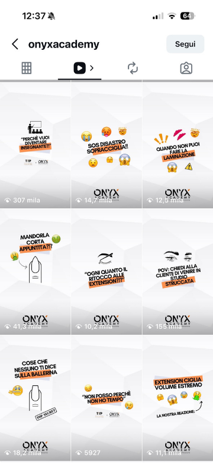
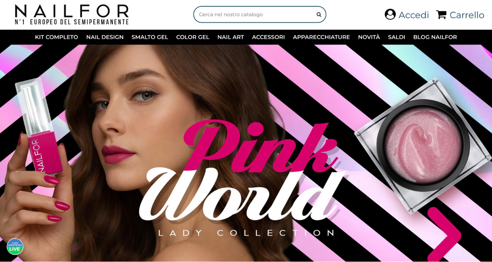
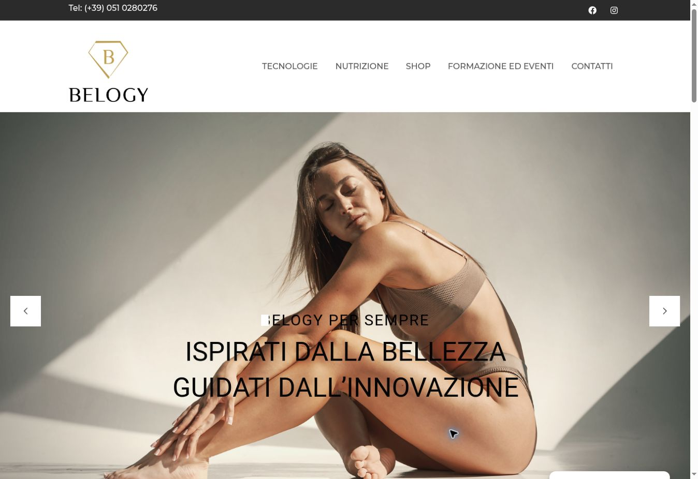

Germany · Desigual
A work-study experience that taught me to adapt quickly to different people, cultures and contexts.
Growth & Digital Marketing Specialist
I turn insight, creativity and technology into marketing experiences that capture attention, generate leads and help brands grow.
Creative thinking
meets strategy.
01 / About me
I’m Roberta, a Growth & Digital Marketing Specialist with a multidisciplinary approach: I start with data, build a strategy and turn it into content, funnels and experiences designed to convert.
My strength lies in the dialogue between content creation and analytics: I build distinctive identities and content, then use data and insight to make them more effective. I have proven experience in the beauty and education industries, translating business goals into measurable digital strategies.
Explore my full experience ↗
02 / Fun facts about me
While studying, I worked as a Beauty Advisor for a multinational company, learning to observe people, understand their aspirations and turn a product into an experience.
A work-study experience that taught me to adapt quickly to different people, cultures and contexts.
My first encounter with the international dimension of a brand and with new ways of communicating and working.
Different experiences connected by the same thread: curiosity, attention to people and sensitivity to the way a brand is perceived.
03 / Selected work
A selection of projects where strategy, creativity and a conversion mindset become tangible results.


Brand ecosystem · Growth marketing
Digital strategy, content and B2B/B2C funnels: lead generation campaigns, SEO, landing pages, newsletters, CRM and automation.
Strategy, creativity and conversion in one ecosystem

Social strategy · Lead generation
From information channel to acquisition tool: editorial planning, multi-format content and advertising campaigns.
+5,3% follower · engagement fino al 3%

SEO · E-commerce
Keyword research, on-page optimisation and product-page copywriting to improve visibility, CTR and conversion.
Content transformed into organic assets

Business development · Sales funnel
Prospecting, lead qualification and events as conversion drivers to grow the sales network.
Marketing and sales within the same funnel
04 / Skills
Funnels, advertising, lead generation, KPIs and conversion optimisation.
Editorial strategy, copywriting, keyword research and multi-format content.
Email marketing, nurturing, workflows and AI applications for marketing.
Landing pages, WordPress, information architecture and user-centred design.
05 / Why work with me
I recognise what makes content visually distinctive and consistent with a brand’s identity.
Every creative choice begins with an objective, an audience and a result to achieve.
I explore tools, trends, technologies and AI applications to find more effective ways to communicate.
I understand industries where image, desirability and experience influence people’s choices.
I analyse, experiment and optimise: every project is an opportunity to learn and improve.
I make strategically strong what also needs to be aesthetically desirable.
06 / Let’s work together